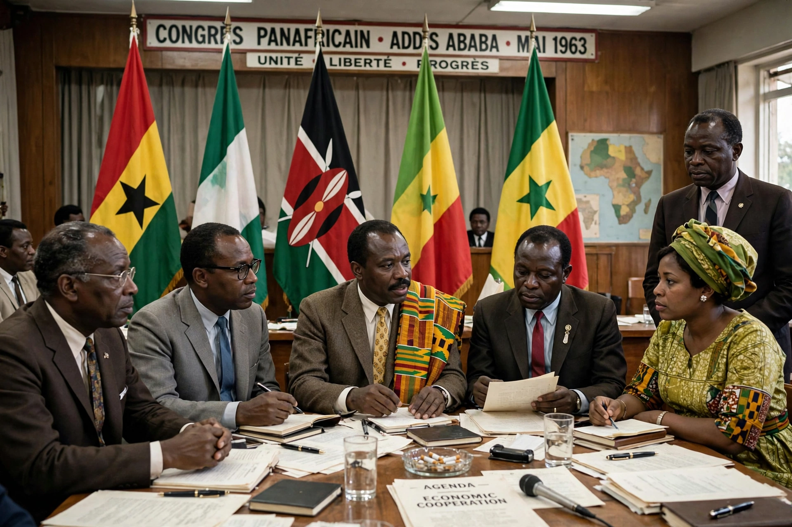

Pan-Africanism
From Wikipedia, the free encyclopedia

Pan-Africanism is a worldwide movement that aims to encourage and strengthen bonds of solidarity between all indigenous and diasporic peoples of African ancestry. From the Pan-African Congresses (London 1900, organised by Henry Sylvester Williams; the 1945 Manchester Congress of Du Bois, Nkrumah and Kenyatta) it powered the decolonisation of Africa, founded the Organisation of African Unity (1963, now the African Union) and shaped Black political thought across the Atlantic world — Garveyism, Négritude and Black Power among its branches.
Ideas and leaders
The movement's claims: a shared African identity forged in slavery, colonialism and resistance; the necessity of continental unity for real independence (Kwame Nkrumah's 'Africa Must Unite'); and the diaspora's stake in Africa's liberation (and vice versa). Tensions ran between gradualist and revolutionary wings, and between continental and diaspora priorities — the 1974 Dar es Salaam congress's controversies rehearsed them all.
Achievements and critiques
Pan-Africanism's monuments are the AU, the liberation movements it networked, and cultural-political vocabularies from 'African socialism' to Afrobeats-era pride. Its unrealised core — Nkrumah's continental government, killed at the OAU's founding by the Casablanca/Monrovia split — still organises African politics' ambitions: free-trade areas (AfCFTA, 2019), visa-free movement dreams, and the recurring phrase 'African solutions to African problems'.